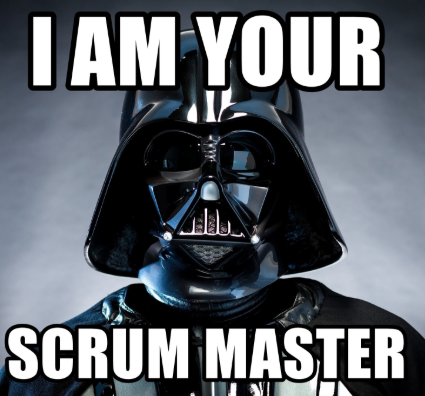
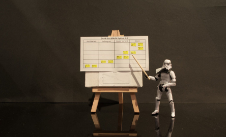
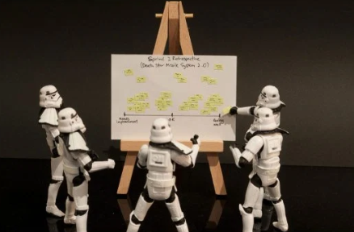

SCRUM
What is Scrum?
Scrum is a framework within which people can address complex adaptive problems, while productively and creatively delivering products of the highest possible value.
Scrum history:
The first full implementation of Scrum occurred in 1993 when Jeff Sutherland, John Scumniotales and Jeff McKenna implemented Scrum at the Easel Corporation.
In 1995, Jeff Sutherland and Ken Schwaber jointly presented a paper, ”The SCRUM Development Process”, at Object-Oriented Programming, Systems, Languages & Applications (OOPSLA) Conference ‘95 in Austin, Texas, its first public appearance.
Three main features about scrum
- Lightweight
- Simple to understand
- Difficult to master
Roles in Scrum
- Product owner
- Scrum master
- Development team
Product owner
Product owner (PO) is the link between the development team and the customer. The objective of PO is to maximize the value of the product being developed and the work of the team.
Scrum master
Scrum master (SM) is the “servant-leader”. The task of Scrum Master is to help the team maximize its effectiveness by removing obstacles, help, training and motivating the team, helping PO
Development team
The development team consists of specialists who directly work on the product.
Scrum Process
A schematic representation of the process is shown in the following figure:

The Scrum Events
- Sprint
- Sprint Planning
- Daily Scrum
- Sprint Review
- Sprint Retrospective
Sprint
The basis of Scrum is Sprint, during which work on the product is performed. At the end of Sprint, a new working version of the product should be received. Sprint is always limited in time (1-4 weeks) and has the same duration throughout the life of the product.
Sprint Planning
Before each Sprint starts, Sprint Planning is performed, on which the content of the Product Backlog is evaluated and the Sprint Backlog is formed, which contains the tasks (Story, Bugs, Tasks) that must be completed in the current sprint.
Daily Scrum
Every day, Daily Scrum is held, on which each member of the team answers the questions “What did I do yesterday?”, “What do I plan to do today?”, “What obstacles did I encounter in my work?”
Sprint Review and Sprint Retrospective
At the end of Sprint, Sprint Review and Sprint Retrospective are produced, the task of which is to evaluate the effectiveness (productivity) of the team in the past Sprint, to predict the expected effectivenessin the next sprint, identify existing problems.
Important, often forgotten features:
- Scrum is applied incorrectly or incompletely.
- The importance of working to ensure team motivation is underestimated.
- Scrum is used for a product whose requirements are contrary to Scrum's ideology.
Advantages
1. Scrum has quite attractive advantages. Scrum is customer oriented, responsive. Scrum gives the customer the ability to make changes to requirements at any given time (but does not guarantee that these changes will be implemented). The ability to change requirements is attractive to many software customers.
2. Scrum is quite easy to learn, it allows you to save time by eliminating non-critical activities. Scrum allows you to get a potentially working product at the end of each Sprint. Scrum focuses on a self-organizing, multi-functional team that can solve the necessary tasks with minimal coordination. This is especially attractive for small companies and startups, as it eliminates the need for hiring or training specialized personnel for managers.
Disadvantages
1. Due to its simplicity and minimalism, Scrum sets a small number of fairly strict rules. However, this conflicts with the idea of customer focus in principle, since the internal rules of the development team are not important to the client, especially if they limit the client. For example, if necessary, by the decision of the Sprint client, the backlog can be changed, despite the apparent contradiction with the Scrum rules.
2. Another weak feature of Scrum is its emphasis on a self-organizing, multi-functional team. With the apparent reduction in the cost of coordinating the team, this leads to an increase in the costs of selecting personnel, their motivation, and training. Under certain labor market conditions, the formation of a full-fledged, effective Scrum team may not be possible.